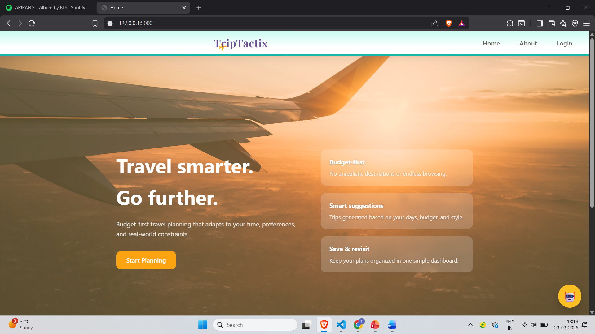
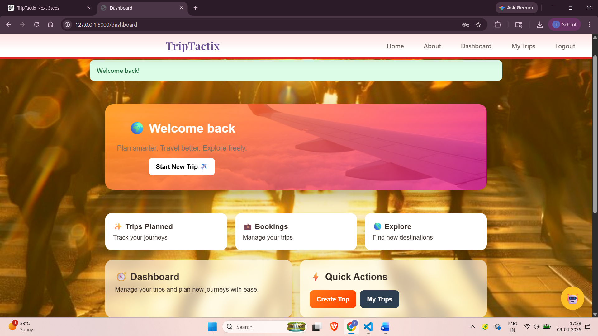
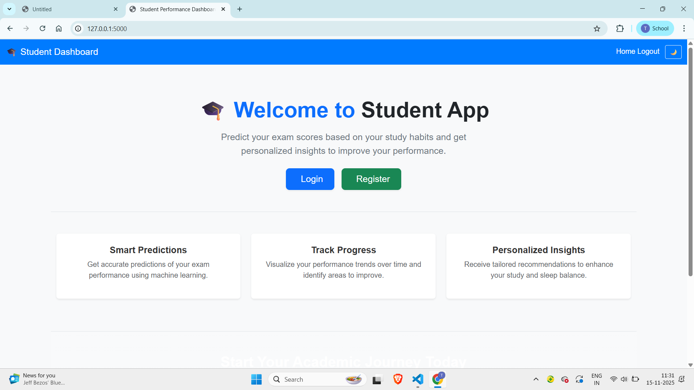
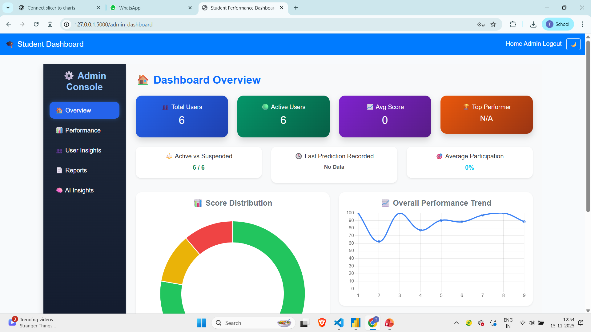

Building practical software applications and exploring QA Testing, AI Evaluation, Software Development, Product Support, and Technical Writing opportunities.
🚀 Open to QA, Software Development, AI Evaluation, Product Support, and Technical Writing opportunities.
Projects
Months Internship
Technologies
Graduate
I am an MCA graduate with experience in Python, Flask, Spring Boot, SQL, and full-stack application development. I enjoy building practical projects, testing products, solving technical problems, and exploring AI-powered applications. Currently seeking opportunities in QA Testing, Software Development, AI Evaluation, Product Support, and related technology roles.
A collection of projects built using Python, Flask, Machine Learning, and modern web technologies.


Budget-based travel planning platform built using Flask and SQLite. Users can discover destinations, generate itineraries, manage bookings, and plan trips based on budget constraints.
Tech Stack: Flask, SQLite, HTML, CSS, JavaScript


Machine learning application that predicts student performance based on academic and behavioral factors. Includes dashboards, analytics, visualizations, and prediction workflows.
Tech Stack: Python, Flask, Machine Learning
Marketplace platform connecting farmers and buyers through product listings, dashboards, and marketplace management features. Current development includes dedicated Farmer Dashboard, Buyer Dashboard, Admin Dashboard, and improved UI/UX.
Tech Stack: Flask, Python, SQLite, HTML, CSS
Prop Innovations and Solutions
These resumes highlight different aspects of the same experience based on the type of role. While the emphasis varies, all projects, skills and experience remain truthful and consistent.
Focuses on Flask, backend development, REST APIs and software engineering.
Highlights testing, debugging, software quality and validation experience.
Emphasizes machine learning, AI-powered applications and prompt engineering.
Highlights SQL, analytics, reporting and data-focused projects.
Looking for a general overview? View General Resume →